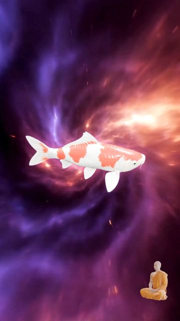
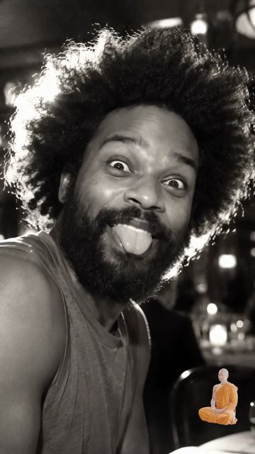
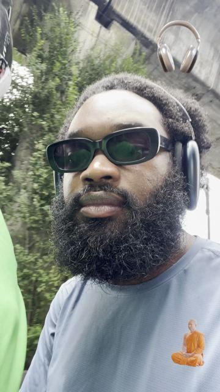
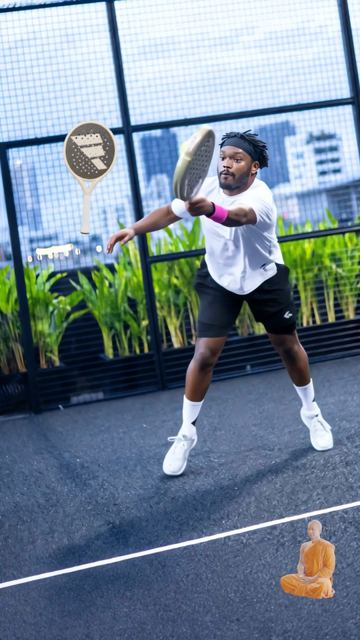
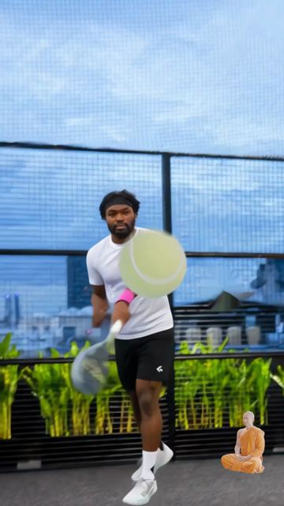
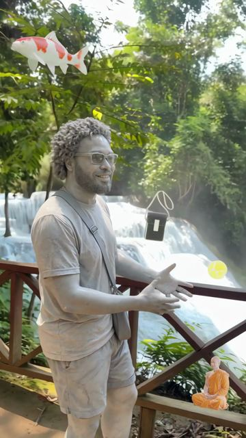
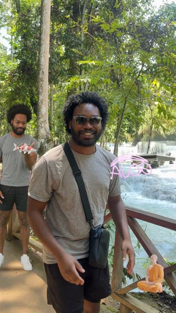
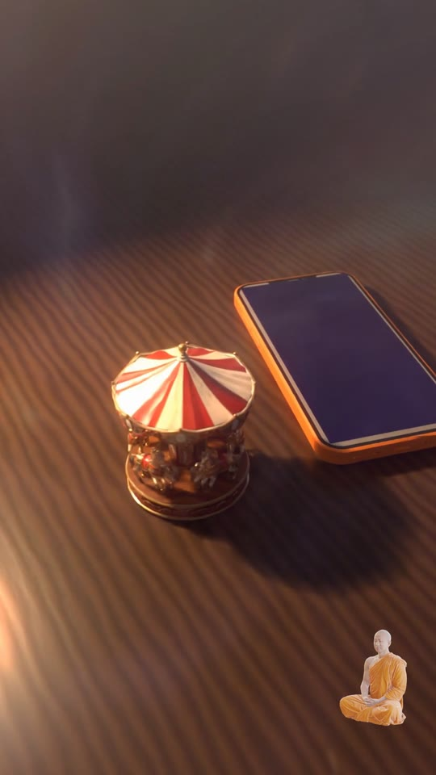

DAEMN · a visual + audio mix
“Life is a game, a loop, you define yourself.”
to Gotts Street Park — Lost & Found · sound on for the full piece
Frames from the piece








The objects
Every object in the piece, on one carousel. Spin it.
Koi — swims through the iris